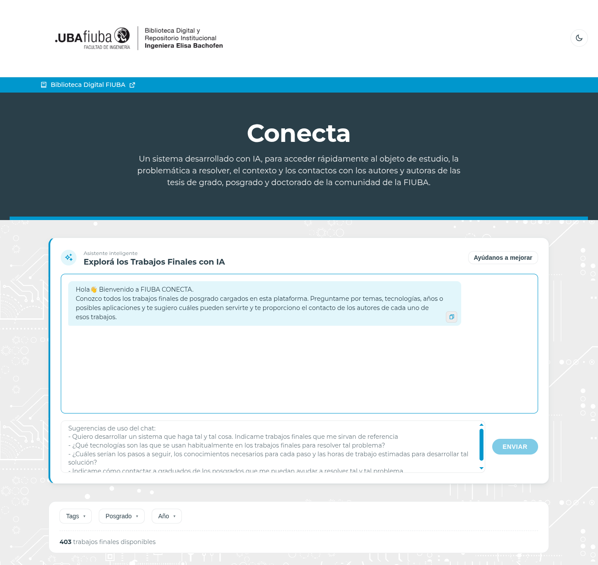
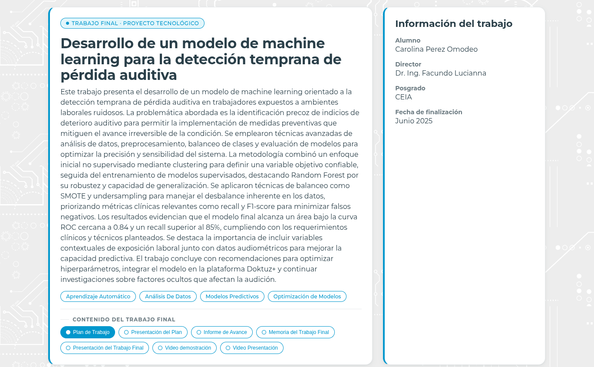

Formación en Inteligencia Artificial para empresas
Posgrados del Laboratorio de Sistemas Embebidos
Facultad de
Ingeniería · Universidad de Buenos Aires
Federico G. Zacchigna · Coordinación Académica de IA
20 de
octubre de 2026
El posgrado en IA más grande del país. Y es UBA.
cohortes de IA desde 2020
inscriptos en IA
trabajos finales de IA
títulos oficiales de la Universidad de Buenos Aires
Oferta en Inteligencia Artificial
- IA Aplicada (DIIAA)
- Procesamiento del Lenguaje Natural
- Visión por Computadora
- Aprendizaje por Refuerzo
- Especialización en IA
- Maestría en IA
- Maestría en IA Embebida
- Maestría en Computación de Borde
Otras áreas
- Sistemas Embebidos
- Internet de las Cosas
- Microelectrónica
IA aplicada, sin necesidad de programar
- Para cualquier perfil: gerentes, administración, comercial, producción, salud, agro, legales...
- Formación universitaria: diplomatura de la UBA de 5 bimestres, con docentes de la Facultad de Ingeniería.
- Aplicada al propio trabajo: cierra con un trabajo final sobre un caso de su ámbito laboral.
- Compatible con la jornada: modalidad a distancia, clases de 19 a 22 h.
lse-posgrados.fi.uba.ar/posgrados/diplomaturas/diiaa
Recorrido
Preparamos para resolver problemas reales
Egresados "Plug & Play": aplican lo aprendido en la empresa desde el primer día.
Enfoque profesional
Cada carrera está orientada a implementar soluciones, no solo a la teoría.
Trabajo final aplicado
Las materias se organizan alrededor de un proyecto real, con director, planificación y defensa pública.
Sin dejar de trabajar
Modalidad a distancia, con clases de 19 a 22 h.
Su empresa propone el problema, nuestros alumnos lo resuelven
Ejemplos de trabajos realizados (ver en FIUBA Conecta)
Conteo de plantas en cultivos de arroz ↗ Detección temprana de pérdida auditiva ↗ Anomalías en simulaciones de circuitos integrados ↗ Monitoreo de cámaras frigoríficas ↗Encuentren a quien ya resolvió un problema como el suyo
trabajos finales de posgrado disponibles
- Asistente con IA: se le describe el problema y sugiere trabajos relacionados.
- Filtros por tema, posgrado y año.
- Contacto directo con los autores.


Cursos a medida para su empresa
Tenemos experiencia diseñando y dictando capacitaciones en IA para empresas.
A su medida
Contenidos y duración definidos junto con la empresa.
Online o presencial
Lo que mejor se adapte a cada equipo.
Docentes UBA
El mismo cuerpo docente y el mismo enfoque práctico de nuestros posgrados.
¿Hablamos?
Federico G. Zacchigna
coordinacion.academica.ia.lse@fi.uba.ar